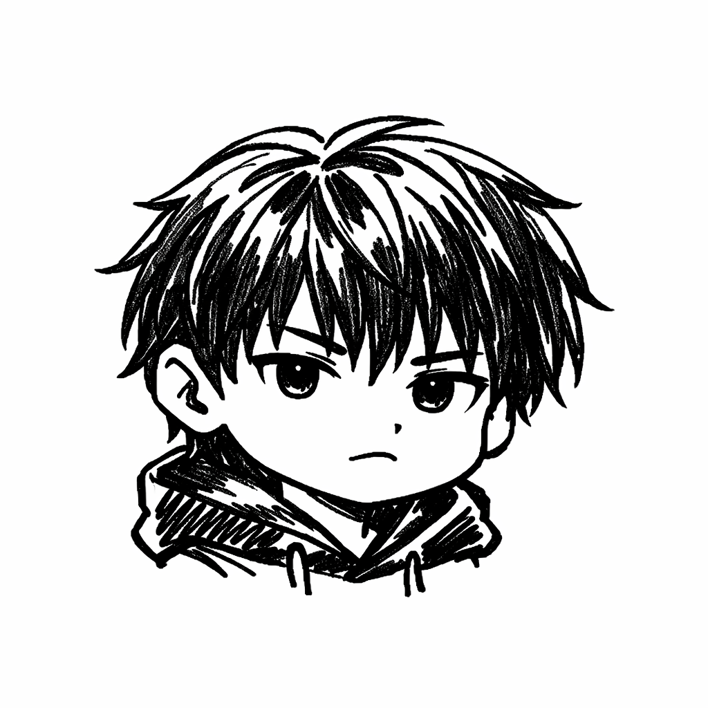

Rotoscoping Project
Rotoscoping Progress
Follow my comprehensive journey through the art of rotoscoping from week 3 to week 13. Each video showcases the progression of skills and techniques learned throughout this creative process.

Orlanda, Ardee Jhade B.
BSIT — Bachelor of Science in Information Technology
Tools & Software
What was used to create this rotoscoping project
Adobe After Effects
Industry-standard motion graphics software used for rotoscoping with the Roto Brush tool, layer-based compositing, and final rendering.
CapCut
User-friendly video editor used for adding backgrounds, text overlays, and effects before exporting the final output.
Video Reference
Original footage used as the basis for rotoscoping, providing the motion and timing for the Roto Brush selections.
HTML / CSS / JS
This portfolio site is built with vanilla HTML, CSS, and JavaScript — hosted on GitHub Pages with no build tools.
Rotoscoping Process
The Rotoscoping Process
Find a Video to Rotoscope
Begin by selecting a suitable video to use as your rotoscoping reference. Choose footage with clear movement and distinct body parts or clothing for the best results.
Import the Video into After Effects
Open Adobe After Effects and import the selected video into your project. Drag it into a new composition to begin the rotoscoping workflow.
Create & Duplicate Layers
Create or duplicate the video layer for each body part or clothing element you want to isolate — for example, HairLayer, SkinLayer, ShirtLayer, PantsLayer, and so on.
Use the Roto Brush Tool
Select a layer by double-clicking it, then press Alt + W to choose the Roto Brush version. Use the brush to carefully select the specific body part or clothing item assigned to that layer.
Render & Freeze the Selection
After completing your Roto Brush selection, press Space to render and propagate it through all frames. Once the playback finishes, click Freeze if there are no conflicts with the selection.
Apply Solid Color Layers
Create a new solid layer by pressing Ctrl + Y, choose a color, and click OK. Then toggle the Switches/Modes panel and set the solid to interact with the corresponding layer — for example, apply a skin-tone solid, set it to "No Mat," and assign it to the SkinLayer.
Render & Export from After Effects
After repeating Steps 4–6 for every layer, press Ctrl + M to open the Render Queue. Configure your output settings and export the final rotoscoped animation.
Edit Background & Text, Then Publish
For the final editing stage — adding backgrounds, text, and effects — you have two options: continue working in After Effects or switch to CapCut for a simpler editing experience. In this project, CapCut was used for its ease of use. Once you're satisfied with the result, export the video and upload it to your YouTube channel.
Weekly Progress
Week 1
Week 2
Week 3
Week 4
Continuing to build momentum — exploring layer-based rotoscoping techniques.
Week 5
Applying color and solid layers to isolated body parts and clothing.
Week 6
Refining Roto Brush selections and working through complex frames.
Week 7
Mid-project milestone — significant progress in animation quality.
Week 8
Polishing individual layers and fine-tuning color assignments.
Week 9
Tackling the most challenging sequences with improved precision.
Week 10
Nearly complete — adding finishing touches and reviewing all frames.
Week 11
Final rendering and exporting from After Effects.
Week 12
The final output — background editing, text overlays, and publishing.
Final Output
The completed rotoscoping animation — the culmination of 12 weeks of work.
Completed Rotoscope Animation
The finished product featuring background editing, text overlays, and full rotoscoped animation — ready for publishing.
This video is for educational purposes only. No copyright infringement is intended. All rights belong to their respective owners.
Reference Video
The original video used as the reference for this rotoscoping project.
Original Reference Footage
The source material traced frame-by-frame to create the rotoscope animation.
This video is for educational purposes only. No copyright infringement is intended. All rights belong to their respective owners.
Explore More Projects
Continue your journey through my multimedia portfolio and discover more creative works.